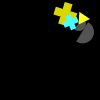
(1)
More than a third of the blue shapes are semicircles.
Exactly zero shapes are gray semicircles.
Less than two shapes are cyan.
At most four shapes are crosses.
At least one triangle is yellow.
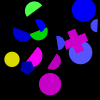
(2)
Less than a third of the shapes are semicircles.
At least two thirds of the green shapes are rectangles.
Less than two thirds of the shapes are magenta.
Exactly two thirds of the circles are yellow.
Less than a third of the circles is yellow.
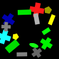
(3)
Exactly a third of the shapes is green.
Less than a quarter of the green shapes are ellipses.
Not three quarters of the yellow shapes are pentagons.
Less than a quarter of the rectangles are yellow.
Not five shapes are triangles.
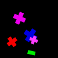
(4)
Exactly half the crosses are magenta.
At most three quarters of the shapes are rectangles.
At most all shapes are magenta crosses.
At least half the cyan shapes are crosses.
Exactly zero magenta shapes are crosses.
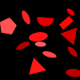
(5)
More than five shapes are red ellipses.
At most three red shapes are rectangles.
Not a quarter of the shapes are ellipses.
At most one shape is a semicircle.
At least four shapes are triangles.

(6)
At least one shape is a gray triangle.
More than two thirds of the triangles are blue.
Exactly three quarters of the shapes are blue.
Exactly all red shapes are ellipses.
Less than a quarter of the shapes are squares.
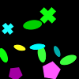
(7)
At least two shapes are yellow.
At least a quarter of the green shapes are pentagons.
At most a quarter of the shapes are cyan.
Exactly zero shapes are cyan circles.
Not two thirds of the ellipses are green.
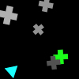
(8)
Less than four shapes are gray.
More than four shapes are gray crosses.
Not four shapes are gray.
Not three shapes are cyan.
At most three shapes are cyan triangles.
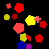
(9)
Less than a quarter of the shapes are red crosses.
Not a third of the blue shapes are pentagons.
Less than a third of the red shapes are crosses.
Exactly one yellow shape is a pentagon.
More than two thirds of the red shapes are pentagons.
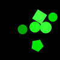
(10)
Exactly two thirds of the shapes are green circles.
Exactly a quarter of the shapes are circles.
At least a quarter of the shapes are green.
Exactly four shapes are semicircles.
At most three shapes are green pentagons.
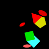
(11)
Not two shapes are ellipses.
At most all ellipses are red.
Less than one pentagon is yellow.
Exactly no shape is a magenta ellipse.
Less than four shapes are red ellipses.
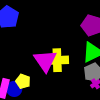
(12)
Not no green shape is a pentagon.
At most three quarters of the gray shapes are pentagons.
At least four yellow shapes are crosses.
Exactly two shapes are yellow.
At least one rectangle is blue.
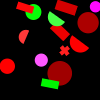
(13)
Less than three shapes are rectangles.
More than no shape is a red circle.
Exactly four shapes are circles.
Less than three red shapes are rectangles.
More than four red shapes are crosses.
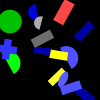
(14)
At most four shapes are gray.
More than three rectangles are blue.
More than two rectangles are blue.
At most three quarters of the shapes are blue.
At least a quarter of the shapes are blue.
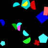
(15)
Not two shapes are green.
More than one shape is a blue semicircle.
Exactly one magenta shape is a semicircle.
At most one shape is a cyan semicircle.
More than half the shapes are cyan pentagons.
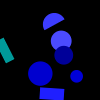
(16)
At least four blue shapes are circles.
At least one shape is a cyan semicircle.
At most three circles are blue.
Less than one rectangle is blue.
Exactly four shapes are semicircles.
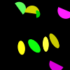
(17)
At most a quarter of the ellipses are green.
Exactly a third of the shapes are yellow ellipses.
Not two shapes are semicircles.
More than a quarter of the shapes are yellow.
Not no shape is a green semicircle.

(18)
At least two thirds of the shapes are magenta.
Not zero shapes are blue semicircles.
Less than a third of the pentagons is blue.
At most two thirds of the shapes are rectangles.
At least three shapes are gray ellipses.
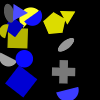
(19)
At most a quarter of the shapes are gray.
At least one shape is a gray pentagon.
Exactly three shapes are gray.
Not three shapes are gray.
At least one shape is a yellow triangle.
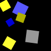
(20)
Exactly three quarters of the yellow shapes are squares.
At most five gray shapes are squares.
At least two squares are gray.
Less than a third of the shapes are squares.
Not one shape is a blue square.
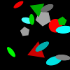
(21)
More than three quarters of the shapes are gray ellipses.
At most three quarters of the ellipses are gray.
Exactly two thirds of the red shapes are triangles.
At least three shapes are gray.
Less than a quarter of the shapes are cyan ellipses.
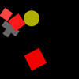
(22)
At least half the shapes are red squares.
At least a third of the pentagons is red.
Less than half the shapes are red squares.
At most three quarters of the red shapes are squares.
More than two squares are red.
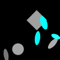
(23)
At most a quarter of the gray shapes are ellipses.
At most five shapes are ellipses.
Not zero shapes are cyan ellipses.
At most two thirds of the gray shapes are circles.
More than three shapes are green.
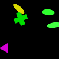
(24)
Not no shape is yellow.
At most three quarters of the ellipses are green.
At least a quarter of the shapes are yellow triangles.
At least no shape is an ellipse.
More than three shapes are green.
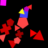
(25)
At most three shapes are red triangles.
Less than a quarter of the shapes are crosses.
More than a quarter of the shapes are red triangles.
More than five triangles are green.
At most a quarter of the shapes are triangles.
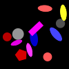
(26)
At most all rectangles are magenta.
Not one shape is a rectangle.
More than five shapes are circles.
Not all shapes are yellow.
Exactly zero shapes are green rectangles.
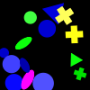
(27)
At most three shapes are magenta.
Less than all shapes are triangles.
At least one shape is a blue circle.
Exactly three quarters of the shapes are green triangles.
Not two shapes are yellow crosses.
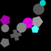
(28)
Not zero cyan shapes are rectangles.
More than half the pentagons are cyan.
Not zero shapes are gray ellipses.
More than a quarter of the circles are gray.
Less than a third of the shapes are pentagons.
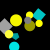
(29)
Exactly five circles are yellow.
Less than five shapes are cyan.
More than four shapes are cyan pentagons.
More than half the shapes are yellow circles.
More than a third of the shapes are cyan squares.
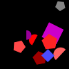
(30)
Exactly three quarters of the pentagons are red.
At least a quarter of the pentagons are blue.
More than half the shapes are red.
At most one red shape is a semicircle.
Exactly no shape is a magenta semicircle.
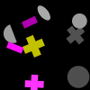
(31)
At least three circles are gray.
More than two rectangles are magenta.
Less than half the gray shapes are circles.
At most four gray shapes are circles.
Exactly a third of the magenta shapes are rectangles.
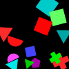
(32)
More than a third of the pentagons is cyan.
Not a third of the green shapes are triangles.
More than no shape is a square.
At least no shape is a red pentagon.
At least a quarter of the shapes are magenta pentagons.
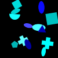
(33)
At most one shape is cyan.
Not two shapes are blue.
At most four shapes are blue.
Not four triangles are blue.
Not two shapes are squares.
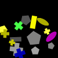
(34)
Exactly a quarter of the shapes are pentagons.
Not one shape is a yellow cross.
At most two shapes are blue crosses.
Exactly no gray shape is a pentagon.
Exactly two thirds of the shapes are blue.
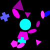
(35)
More than a quarter of the ellipses are magenta.
Not one blue shape is an ellipse.
At most three shapes are cyan crosses.
Less than two shapes are ellipses.
Not no shape is a blue triangle.
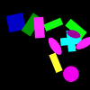
(36)
At least four shapes are ellipses.
At most three magenta shapes are rectangles.
At least two crosses are cyan.
Less than a quarter of the shapes are green rectangles.
More than one blue shape is a rectangle.
(37)
Exactly three quarters of the shapes are cyan.
At most all red shapes are squares.
Exactly one shape is a gray triangle.
Not one rectangle is cyan.
At least a third of the semicircles is green.
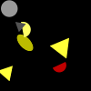
(38)
Less than two shapes are gray.
At least a third of the yellow shapes are ellipses.
Exactly all circles are gray.
At least half the semicircles are yellow.
More than zero shapes are yellow.
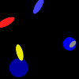
(39)
Less than half the ellipses are magenta.
At least two thirds of the shapes are yellow ellipses.
Exactly a third of the shapes are blue circles.
More than two shapes are yellow.
Less than half the shapes are blue circles.
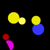
(40)
At most four shapes are red.
Not five shapes are magenta semicircles.
More than a quarter of the shapes are blue circles.
More than a third of the semicircles is yellow.
Not a third of the shapes are triangles.
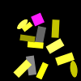
(41)
Not three quarters of the shapes are green.
At least three yellow shapes are squares.
At most four shapes are rectangles.
Not all rectangles are yellow.
Exactly one rectangle is magenta.
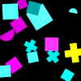
(42)
Exactly a third of the shapes is magenta.
Not half the squares are cyan.
At least two shapes are magenta semicircles.
Less than three shapes are yellow.
At most half the shapes are magenta.
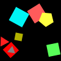
(43)
Less than one shape is a green circle.
Less than three shapes are cyan squares.
At least three quarters of the shapes are red squares.
At most four squares are yellow.
More than half the shapes are triangles.
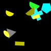
(44)
Exactly two shapes are green.
At most half the shapes are yellow.
Less than one rectangle is cyan.
More than a quarter of the shapes are green crosses.
At most half the shapes are semicircles.
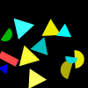
(45)
Less than a quarter of the shapes are cyan.
Not one shape is blue.
Exactly zero yellow shapes are triangles.
More than two thirds of the shapes are triangles.
Less than three semicircles are yellow.
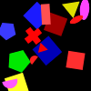
(46)
Not one shape is a red ellipse.
At most half the shapes are red squares.
More than two shapes are yellow.
Less than one shape is green.
Less than two shapes are red squares.
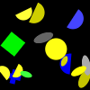
(47)
At least three shapes are yellow ellipses.
At least a quarter of the shapes are circles.
Exactly a third of the green shapes are ellipses.
At most all shapes are yellow semicircles.
Exactly four semicircles are yellow.
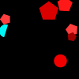
(48)
More than four shapes are red pentagons.
At least a quarter of the pentagons are red.
More than two thirds of the shapes are cyan pentagons.
More than half the circles are red.
Less than two shapes are gray circles.

(49)
At least five shapes are blue rectangles.
Exactly all crosses are yellow.
More than three quarters of the shapes are semicircles.
Not no blue shape is a circle.
Less than half the shapes are magenta.
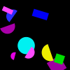
(50)
Exactly one rectangle is green.
Less than three rectangles are blue.
Not one shape is green.
At least half the shapes are green squares.
Not five shapes are semicircles.
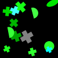
(51)
Not all ellipses are green.
Exactly zero shapes are green.
At most three quarters of the crosses are green.
At most a quarter of the shapes are green.
Less than five crosses are cyan.
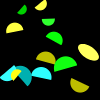
(52)
More than four magenta shapes are semicircles.
Not four shapes are green.
Less than five shapes are semicircles.
More than zero yellow shapes are circles.
At most three quarters of the shapes are green.
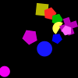
(53)
Not a third of the shapes are yellow semicircles.
Not two pentagons are magenta.
At most five shapes are magenta crosses.
Not half the shapes are triangles.
Less than a third of the shapes are magenta crosses.
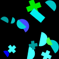
(54)
At most two cyan shapes are crosses.
Not one shape is a cross.
At most half the crosses are green.
Less than a third of the shapes are semicircles.
Not one shape is a cyan semicircle.
(55)
At least half the pentagons are yellow.
Less than half the shapes are cyan pentagons.
At most a quarter of the shapes are ellipses.
At most a third of the circles is cyan.
At most a third of the shapes are blue pentagons.
(56)
At most two thirds of the cyan shapes are squares.
At least two thirds of the ellipses are red.
At most all red shapes are circles.
Exactly half the shapes are cyan squares.
Less than five circles are cyan.
(57)
Less than one square is cyan.
At least three shapes are cyan.
Less than half the shapes are ellipses.
Less than a quarter of the shapes are yellow squares.
At most half the shapes are gray pentagons.
(58)
Exactly three quarters of the blue shapes are ellipses.
Not one shape is blue.
Less than two shapes are magenta.
Exactly a quarter of the shapes are circles.
More than a quarter of the shapes are ellipses.
(59)
Exactly zero shapes are circles.
At most half the shapes are blue.
Not three quarters of the magenta shapes are semicircles.
Less than one gray shape is an ellipse.
Less than two green shapes are pentagons.
(60)
Not one shape is a cyan ellipse.
At most half the shapes are cyan pentagons.
Less than a quarter of the pentagons are cyan.
Exactly one shape is a red rectangle.
At least four shapes are cyan pentagons.
(61)
At least three quarters of the triangles are gray.
Less than two shapes are magenta.
Less than a third of the shapes are gray squares.
At least three crosses are gray.
Exactly zero blue shapes are circles.
(62)
Exactly five rectangles are green.
More than zero red shapes are rectangles.
Exactly one shape is gray.
Less than two shapes are rectangles.
More than one shape is a green rectangle.
(63)
More than a quarter of the shapes are gray.
At least three squares are magenta.
At most four squares are magenta.
At most half the rectangles are gray.
Less than three ellipses are magenta.
(64)
At most five shapes are circles.
More than two thirds of the magenta shapes are semicircles.
More than half the blue shapes are circles.
At least one shape is cyan.
Exactly a third of the squares is red.
(65)
At most five cyan shapes are squares.
Exactly half the shapes are blue triangles.
More than half the blue shapes are triangles.
At most two triangles are blue.
More than a quarter of the triangles are yellow.
(66)
At least four shapes are pentagons.
More than zero shapes are yellow semicircles.
Not all green shapes are semicircles.
At least zero shapes are cyan.
At most all shapes are semicircles.
(67)
At least one cross is magenta.
More than four shapes are magenta.
Not four crosses are magenta.
More than two shapes are magenta pentagons.
Not all shapes are magenta.
(68)
Exactly half the green shapes are triangles.
More than a quarter of the shapes are blue.
Less than five triangles are green.
At least three quarters of the shapes are blue.
Exactly no shape is a blue triangle.
(69)
Less than five shapes are circles.
More than half the gray shapes are semicircles.
Exactly zero shapes are yellow.
Exactly one shape is red.
At most four shapes are pentagons.
(70)
Not no shape is magenta.
At most a quarter of the shapes are blue triangles.
Less than a quarter of the pentagons are gray.
Not two shapes are magenta.
At least no semicircle is gray.
(71)
At least three shapes are red semicircles.
At most a third of the shapes are cyan semicircles.
Not two shapes are red semicircles.
At most half the red shapes are pentagons.
Less than a third of the shapes are red semicircles.
(72)
Exactly two thirds of the shapes are magenta ellipses.
At most one ellipse is red.
Not zero rectangles are magenta.
Exactly one shape is red.
At most one shape is a square.
(73)
Less than half the shapes are gray ellipses.
More than a third of the gray shapes are squares.
Exactly one red shape is a semicircle.
At least three shapes are triangles.
At most one triangle is red.
(74)
At least a quarter of the pentagons are gray.
Exactly no shape is an ellipse.
Not a quarter of the shapes are green pentagons.
Not one shape is a green cross.
Exactly three pentagons are green.
(75)
Not one shape is magenta.
More than one shape is a blue semicircle.
At most two thirds of the pentagons are blue.
Not a quarter of the pentagons are blue.
Less than five pentagons are blue.
(76)
At least one shape is a blue semicircle.
More than zero shapes are red pentagons.
At least a quarter of the shapes are red.
Not a quarter of the shapes are red rectangles.
More than zero shapes are red circles.
(77)
Less than a quarter of the yellow shapes are semicircles.
At least five yellow shapes are pentagons.
More than three shapes are yellow crosses.
At most two thirds of the crosses are cyan.
Not two shapes are yellow semicircles.
(78)
Less than three quarters of the shapes are cyan semicircles.
Less than four shapes are pentagons.
Less than one shape is a circle.
Less than two thirds of the shapes are pentagons.
Less than two shapes are circles.
(79)
Not no shape is a yellow cross.
Not no magenta shape is a triangle.
Exactly a quarter of the squares are gray.
Not two thirds of the shapes are blue ellipses.
Less than a third of the shapes is blue.
(80)
At least four shapes are red.
Less than a quarter of the ellipses are blue.
Exactly no blue shape is a triangle.
At least half the shapes are blue circles.
Exactly zero shapes are green pentagons.
(81)
Not two shapes are yellow.
More than a third of the cyan shapes are pentagons.
Not zero shapes are green rectangles.
More than one shape is a magenta rectangle.
Less than half the shapes are pentagons.
(82)
Exactly one shape is a green semicircle.
More than no shape is a gray semicircle.
Exactly zero pentagons are green.
More than one magenta shape is a triangle.
Exactly two thirds of the semicircles are green.
(83)
At most one shape is gray.
Not a third of the semicircles is gray.
More than zero shapes are green.
At least zero shapes are yellow pentagons.
Less than a third of the shapes are semicircles.
(84)
Not two thirds of the shapes are rectangles.
More than two shapes are gray rectangles.
At least four shapes are red rectangles.
Less than two semicircles are red.
More than three shapes are rectangles.
(85)
At most a quarter of the shapes are red circles.
Less than four shapes are red circles.
Not zero shapes are red circles.
Not one semicircle is cyan.
More than zero shapes are magenta circles.
(86)
At most five shapes are red ellipses.
At most two thirds of the shapes are red crosses.
Exactly half the red shapes are crosses.
Not a third of the shapes is red.
Less than one shape is a yellow cross.
(87)
Not two shapes are crosses.
At most four crosses are blue.
More than a third of the squares is green.
More than two thirds of the green shapes are squares.
At most three quarters of the shapes are green.
(88)
Less than one shape is magenta.
Not a quarter of the ellipses are gray.
At least a quarter of the shapes are yellow.
At most three quarters of the shapes are magenta ellipses.
At least half the shapes are circles.
(89)
At least five semicircles are green.
Not two shapes are cyan.
At least three quarters of the semicircles are gray.
Less than two shapes are cyan circles.
At most half the shapes are green semicircles.
(90)
Less than three rectangles are yellow.
More than three ellipses are magenta.
Less than five shapes are yellow circles.
More than half the yellow shapes are ellipses.
Less than five yellow shapes are pentagons.
(91)
At least four shapes are gray.
Not two red shapes are circles.
At most a third of the shapes are red circles.
At most one circle is red.
At most a third of the shapes are magenta circles.

(92)
Not three quarters of the green shapes are ellipses.
Less than five shapes are ellipses.
More than a third of the shapes is gray.
At least one shape is a green ellipse.
Less than a quarter of the ellipses are yellow.
(93)
Less than two thirds of the magenta shapes are rectangles.
At least three quarters of the rectangles are magenta.
Less than four shapes are circles.
At least five shapes are magenta pentagons.
Less than two shapes are circles.
(94)
More than five shapes are yellow crosses.
At most four crosses are magenta.
At most two thirds of the crosses are magenta.
More than one shape is a rectangle.
Not one shape is a rectangle.
(95)
Exactly three shapes are circles.
At least two thirds of the yellow shapes are crosses.
Exactly a quarter of the shapes are circles.
Not all shapes are gray circles.
At most four shapes are cyan circles.

(96)
At most two thirds of the circles are yellow.
At most two thirds of the shapes are red.
Less than a third of the shapes are circles.
At most two green shapes are circles.
At least a third of the shapes are semicircles.
(97)
At most a quarter of the shapes are yellow triangles.
More than four shapes are yellow pentagons.
Not four shapes are yellow triangles.
Less than five shapes are blue.
Less than four yellow shapes are pentagons.
(98)
Less than two shapes are red.
Exactly two red shapes are rectangles.
Exactly all ellipses are cyan.
Less than four shapes are pentagons.
Less than a third of the shapes are magenta pentagons.
(99)
Exactly two shapes are cyan semicircles.
Exactly no shape is a blue square.
Less than five shapes are semicircles.
Less than one green shape is a pentagon.
Less than a third of the shapes are semicircles.
(100)
At most half the magenta shapes are rectangles.
Less than three crosses are red.
Not three shapes are rectangles.
At most a third of the shapes is green.
At most two shapes are red rectangles.